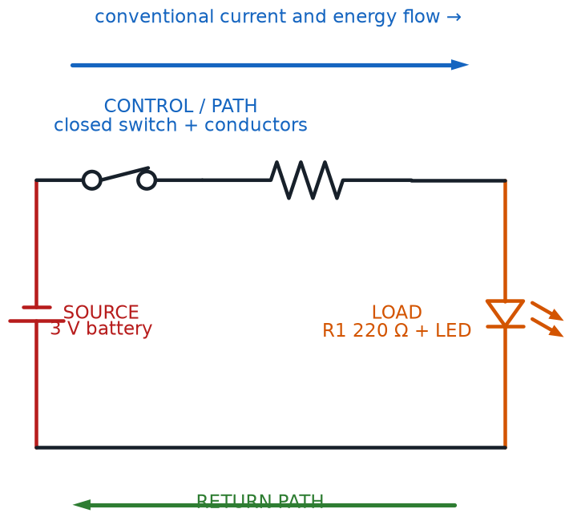

Conductors, Batteries, and Circuit Vocabulary Review
Summary
The final foundational chapter covers conductors, insulators, and semiconductor materials, battery behavior (capacity, internal resistance, terminal voltage), and the last of the circuit-analysis vocabulary. It closes out the theory-only portion of the course before students pick up a breadboard for the first time.
Concepts Covered
This chapter covers the following 19 concepts from the learning graph:
- Nominal Voltage
- Battery Capacity
- Battery Cell
- Resistivity
- Voltage Rating
- Current Rating
- Charge Carrier
- Circuit Load
- Voltage Source
- Load Current
- Power Consumption
- Energy Conversion
- Conductance
- Current Path
- Circuit Element
- Circuit Continuity
- Voltage Threshold
- Circuit Fault
- Circuit Efficiency
Prerequisites
This chapter builds on concepts from:
- 1. Electricity Basics: Voltage, Current, and Resistance
- 2. Current, Charge, Units, and Electrical Safety
- 4. Series, Parallel, and Circuit Topology
Four chapters in, and you can already do something most people never learn: read a circuit like a native language. You know the Three Amigos — voltage, current, and resistance — you can solve series and parallel networks, and you know what's really happening inside a battery once it's under load. There is exactly one theory chapter left before this course hands you a breadboard and says "go build something." This chapter closes out the vocabulary you'll need for that leap: batteries in the real world, materials measured with real numbers instead of just labels, and the everyday language engineers use to describe any working circuit, from the simplest LED blink to the most complicated kit in your box.
One Chapter to Go
 Welcome to the last stop on Circuit Theory Boulevard, builder! Everything in this chapter — batteries, materials measured with real numbers, and the vocabulary for describing any circuit as a system — is here for one reason: getting your toolbox completely ready before Chapter 6 hands you a real breadboard. No new analogies today, just the good stuff. Let's light it up!
Welcome to the last stop on Circuit Theory Boulevard, builder! Everything in this chapter — batteries, materials measured with real numbers, and the vocabulary for describing any circuit as a system — is here for one reason: getting your toolbox completely ready before Chapter 6 hands you a real breadboard. No new analogies today, just the good stuff. Let's light it up!
Batteries: Cells, Nominal Voltage, and Capacity
Every circuit in this course needs somewhere to get its push from, and up until now you've mostly pictured that as "a battery" without asking what's actually going on inside one. Time to open the case. A battery cell is the basic electrochemical building block inside a battery — a small chemical reaction chamber that produces a fairly steady voltage as a byproduct of the chemical reaction happening inside it. A single AA or AAA cell produces about 1.5 volts from its chemistry, no matter how big or small that particular cell's case is; a lithium cell, like the kind inside a rechargeable robotics battery, produces about 3.7 volts instead. What changes between a tiny coin cell and a giant D cell of the same chemistry isn't the voltage at all — it's how long that voltage can be delivered for, which you'll meet in a moment.
That labeled voltage has its own name, too: the nominal voltage is the standard, textbook voltage value printed on a battery's label, representing its typical voltage under normal conditions. "Nominal" is a useful word to add to your vocabulary — it means "by name" or "in name only," and Chapter 4 already showed you why that hedge matters: a battery's real, measured terminal voltage sags a little under load and drifts down further as the battery ages. Nominal voltage is the number printed on the wrapper; terminal voltage is the number your multimeter actually reads once current is flowing.
Ever wondered why a "9-volt battery" is shaped like a little rectangular block instead of a single cylinder? Nine volts doesn't come from one battery cell — it comes from six 1.5-volt alkaline cells wired in series inside that one case, using the exact series-circuit wiring pattern you mastered in Chapter 4. Stack six 1.5-volt pushes one after another and you get 9 volts, with a little room to spare.
Here's how nominal voltage and typical capacity compare across the battery types you're most likely to meet in a $50 electronics kit:
| Battery Type | Chemistry | Nominal Voltage | Typical Capacity | Common Use |
|---|---|---|---|---|
| AAA (alkaline) | Alkaline | 1.5 V | 800–1,200 mAh | Small remotes, toys |
| AA (alkaline) | Alkaline | 1.5 V | 1,800–2,600 mAh | Remote controls, flashlights, breadboard packs |
| Coin cell (CR2032) | Lithium | 3 V | 200–240 mAh | Watches, tiny breadboard projects |
| 18650 cell | Lithium-ion | 3.6–3.7 V | 2,000–3,500 mAh | Rechargeable robotics, flashlights |
| 9V (rectangular) | Alkaline | 9 V | 400–600 mAh | Smoke detectors, small projects needing higher voltage |
| D (alkaline) | Alkaline | 1.5 V | 12,000–18,000 mAh | High-drain, long-life devices |
Nominal Is a Promise, Not a Guarantee
 "Nominal" shows up constantly once you start reading datasheets, and it always means the same thing: this is the expected, typical number, not an ironclad guarantee. A "1.5-volt" AA battery might measure 1.6 volts fresh out of the package and 1.3 volts near the end of its life — both are perfectly normal, and neither one breaks the nominal-voltage label.
"Nominal" shows up constantly once you start reading datasheets, and it always means the same thing: this is the expected, typical number, not an ironclad guarantee. A "1.5-volt" AA battery might measure 1.6 volts fresh out of the package and 1.3 volts near the end of its life — both are perfectly normal, and neither one breaks the nominal-voltage label.
Two AA batteries can share the exact same 1.5-volt nominal voltage and still behave very differently in a circuit, because of a separate number entirely: battery capacity, the total amount of charge a battery can deliver before it's used up, almost always given in milliamp-hours (mAh) or amp-hours (Ah). A typical AA alkaline battery holds around 2,000 mAh of capacity — enough to supply 2,000 milliamps of current for one hour, or 200 milliamps for ten hours, or any other combination of current and time that multiplies out to roughly the same total.
That relationship gives you a genuinely useful, back-of-the-envelope tool: estimating how long a battery will last in a real project.
Estimated Battery Life
where:
- \( t \) is the estimated battery life, in hours
- \( C \) is the battery capacity, in milliamp-hours (mAh)
- \( I_{load} \) is the current the circuit draws from the battery, in milliamps (mA)
Try it with real numbers: a breadboard project drawing a steady 40 mA from a 2,000 mAh AA battery would run for roughly \( t = 2{,}000 \div 40 = 50 \) hours — a handy estimate to make before committing to a design.
Explore how battery chemistry, nominal voltage, and capacity relate to each other by clicking through the battery types below.
Diagram: Battery Type Explorer
Battery Type Explorer
Type: microsim
sim-id: battery-type-explorer
Library: Custom grid infographic overlay
Status: Implemented
Purpose: Help students compare the nominal voltage, capacity, and typical use of common battery types, reinforcing the comparison table with an interactive, click-to-reveal exploration.
Bloom Taxonomy: Understand (L2). Bloom Verb: compare.
Learning objective: Compare the nominal voltage, typical capacity range, and common use of six battery types — coin cell, AAA, AA, 18650 lithium-ion, 9V, and D cell — by clicking each battery illustration to reveal its specifications in an infobox.
Canvas layout: - Top: six equal interactive columns with battery illustrations shown at approximate relative scale - Bottom: infobox showing the specs of the selected battery
Visual elements: - Six battery illustrations — coin cell, AAA, AA, cylindrical 18650 lithium-ion, 9V block, and D cell - Color-coded column backgrounds and persistent pill labels - Active-column highlight and specification panel
Interactive controls: - Click or keyboard-activate a battery for its infobox (chemistry, nominal voltage, capacity range, common use) - Explore and Quiz modes
Default parameters: - Coin cell selected so one complete comparison card is visible immediately
Behavior when a battery is clicked: Infobox displays chemistry, nominal voltage, capacity range, and common use.
Data Visibility Requirements: Stage 1 (default): All six battery images and labels are visible with the coin-cell specification card open Stage 2 (battery clicked): Selected battery is highlighted and its full specification card is shown Stage 3 (quiz): Learners identify batteries from voltage, capacity, construction, and use clues
Instructional Rationale: An Understand-level comparison objective calls for click-to-reveal specification cards rather than a passive image, so learners compare batteries side by side and then retrieve the distinctions in quiz mode.
Color scheme: Six distinct pastel columns with high-contrast pill labels and selection outlines.
Responsive behavior: The infographic scales to the iframe width and reports its rendered height to the parent page; all controls remain touch-operable.
Implementation: Custom HTML grid overlay, with each battery column tied to a specification lookup table and quiz question set.
Voltage Rating and Current Rating: Reading the Fine Print
Nominal voltage and capacity describe what a battery can supply. Every other component in a circuit has matching numbers describing what it can safely accept. Chapter 1 already introduced the idea of a maximum power rating for LEDs, motors, and buzzers; voltage rating and current rating are two more numbers cut from that same safety-conscious cloth. A component's voltage rating is the maximum voltage it's designed to handle without damage, and its current rating is the maximum current it's designed to carry — cross either line, and something is likely to overheat, fail, or, in the worst case, let out a puff of Chapter 1's infamous magic smoke.
Jumper wires are a perfect example: the thin wires in a breadboard kit are usually rated for around 1 amp — plenty for every LED, sensor, and small-motor circuit in this course, but nowhere close to what a car battery or wall outlet can deliver. Respecting a rating is about matching the right part to the right job.
Ratings Are Not Suggestions
 Datasheet ratings might look like fine print, but they're really a promise: stay under a component's voltage rating and current rating, and it'll work reliably for years. Cross either line and you're gambling with the magic smoke. When in doubt, check the rating before you power something up — it takes five seconds and saves a component.
Datasheet ratings might look like fine print, but they're really a promise: stay under a component's voltage rating and current rating, and it'll work reliably for years. Cross either line and you're gambling with the magic smoke. When in doubt, check the rating before you power something up — it takes five seconds and saves a component.
Materials, By the Numbers: Resistivity and Conductance
Chapter 4 sorted every material into three buckets: conductor, insulator, or semiconductor material. Those labels are useful, but they're like sorting runners into "fast," "medium," and "slow" instead of giving an actual race time. Resistivity (symbol \( \rho \), the Greek letter rho) is that race time — a numeric property of a material itself, describing exactly how strongly it opposes current flow, independent of a particular wire's length or thickness.
Resistance from Resistivity
where:
- \( R \) is the resistance of a specific piece of material, measured in ohms (Ω)
- \( \rho \) is the material's resistivity, measured in ohm-meters (Ω·m)
- \( L \) is the length of the conductor, measured in meters (m)
- \( A \) is the cross-sectional area of the conductor, measured in square meters (m²)
Two patterns fall out of that formula, and both match the pipe picture: double a wire's length and its resistance doubles, since current has twice as far to fight through; double its cross-sectional area (make it thicker) and resistance is cut in half. Resistivity itself depends only on the material, not the wire's shape — and the range is enormous:
- Copper: about \( 1.7 \times 10^{-8} \) Ω·m — an excellent conductor, which is exactly why it's the metal inside almost every wire in your kit
- Nichrome (the metal alloy inside a toaster's heating coil): about \( 1.1 \times 10^{-6} \) Ω·m — conductive enough to carry current, resistive enough to turn a useful amount of it into heat on purpose
- Rubber: roughly \( 10^{13} \) Ω·m — trillions of times more resistive than copper, which is exactly why it makes such a good wire coating
Why do materials land in such different places on that scale? It comes down to how many charge carriers are free to move. A charge carrier is the physical particle that carries electric charge through a material — in a metal wire, that's the electron; in a battery's chemistry or a cup of salt water, it's charged atoms called ions instead. Copper has enormous numbers of loosely held free electrons drifting from atom to atom, which is exactly why it has such low resistivity. Rubber's electrons are all locked tightly in place, leaving almost no free charge carriers to move — exactly why its resistivity is so astronomically high.
Flip resistance upside down, literally, and you get a related quantity engineers reach for just as often: conductance, the reciprocal of resistance, measuring how easily — rather than how strongly — current flows through a component.
Conductance
where:
- \( G \) is conductance, measured in siemens (S)
- \( R \) is resistance, measured in ohms (Ω)
A 100 Ω resistor, for example, has a conductance of \( G = 1 \div 100 = 0.01 \) S, usually written as 10 milli-siemens (mS) using the very same metric prefixes you learned in Chapter 3. Resistance and conductance describe the exact same physical property from opposite directions — a big resistance number always means a tiny conductance number, and vice versa.
Adjust the material, length, and thickness below to see resistance and conductance respond instantly to each change.
Diagram: Resistivity and Conductance Calculator
Resistivity and Conductance Calculator
Type: microsim
sim-id: resistivity-conductance-calculator
Library: p5.js
Status: Specified
Purpose: Let students calculate how a wire's resistance and conductance change with material, length, and cross-sectional area, building an intuitive, hands-on feel for the resistivity formula.
Bloom Taxonomy: Apply (L3). Bloom Verb: calculate.
Learning objective: Calculate a wire's resistance from its resistivity, length, and cross-sectional area, and calculate its conductance as the reciprocal of that resistance, by adjusting a material dropdown and length/thickness sliders and reading the live-updated results.
Canvas layout: - Left (60%): a schematic wire whose visible length and thickness redraw live as the sliders move - Right (40%, stacking below on narrow screens): material dropdown, two sliders, and a results readout
Visual elements: - A wire that stretches/shrinks (length) and thickens/thins (area) as sliders change, tinted by material - A readout showing resistivity (Ω·m), calculated resistance (Ω, auto-scaled), and calculated conductance (S, auto-scaled) - An animated dot-stream inside the wire, moving faster at high conductance and slower at low conductance
Interactive controls: - Dropdown: "Material" — copper, aluminum, nichrome, or rubber, each pre-loaded with its real resistivity value - Slider: "Length (cm)" — 1 to 100 cm - Slider: "Thickness / Cross-Sectional Area (mm²)" — 0.1 to 10 mm² - Display: resistance and conductance recalculated live on every change
Default parameters: - Material: Copper - Length: 20 cm - Cross-sectional area: 1 mm²
Behavior: Changing the material swaps the resistivity value and updates wire tint and dot-stream speed. Increasing length increases displayed resistance and decreases conductance proportionally; increasing cross-sectional area does the opposite. Selecting rubber shows a stalled dot-stream and a "practically an insulator!" callout.
Data Visibility Requirements: Stage 1 (default): Copper wire at default dimensions with resistance and conductance both visible Stage 2 (slider moved): Wire redraws at new dimensions alongside updated numbers, so cause and effect are visible together Stage 3 (material changed): Dramatic jump in resistance/conductance switching from a metal to rubber, making the resistivity range concrete
Instructional Rationale: An Apply-level calculation objective calls for a parameter-exploration calculator rather than a passive diagram, so learners manipulate all three formula inputs and see both outputs respond immediately — the fastest way to build fluency with a three-variable formula.
Color scheme: Copper/orange tint for copper, silver-gray for aluminum, red-orange for nichrome, dull green for rubber, on a light background.
Responsive behavior: Wire drawing and control panel stack vertically on narrow screens; all controls remain touch-usable.
Implementation: p5.js, with resistivity values in a lookup table keyed by material; wire dimensions and dot-stream speed recalculated every frame from slider values.
Reciprocal Best Friends
 Resistance and conductance will always give you the exact same information, just flipped upside down — literally, since \( G = 1/R \). If a datasheet ever gives you conductance instead of resistance, don't panic: just flip the fraction, and you're back on familiar ground.
Resistance and conductance will always give you the exact same information, just flipped upside down — literally, since \( G = 1/R \). If a datasheet ever gives you conductance instead of resistance, don't panic: just flip the fraction, and you're back on familiar ground.
The Circuit as a System: Sources, Loads, and Paths
Step back from materials for a moment and look at the big picture: no matter how many components a circuit has, every single one can be sorted into one of a few simple roles. A voltage source is any component that supplies the voltage push driving current around a circuit — a battery, a USB power supply, a solar panel, or, later in this course, a voltage regulator kit. A circuit load is the flip side of that: any component that consumes electrical energy from the source and converts it into another useful form. Every LED, motor, and buzzer you've read about since Chapter 1 has secretly been a circuit load the whole time — now it has a proper name.
Connect a voltage source to a circuit load, and current has to travel somewhere in between. That specific route is called the current path — the actual journey current takes from the source, through every circuit element along the way, and back again to complete the loop. A circuit element is simply the general, catch-all term for any individual component wired into that path: a resistor, an LED, a switch, a battery, or anything else you might drop onto a breadboard.
Diagram: Source-Path-Load Circuit System

Every closed circuit you'll build in this course, no matter how many parts it has, boils down to the same three ingredients:
- At least one voltage source supplying the push
- At least one circuit load consuming the energy and doing something useful with it
- A current path made of circuit elements connecting the two into a complete loop
The actual amount of current a circuit load draws once it's connected and switched on has its own name too: load current. You already met this idea earlier in the chapter without the label — \( I_{load} \) in the estimated-battery-life formula was exactly this, the current a circuit load pulls from its voltage source while it's running.
Same Circuits, Sharper Labels
 Every vocabulary word in this section describes something you've already pictured in your head since Chapter 1. Naming it precisely is what lets you talk about any circuit — from a single blinking LED to next year's most ambitious project — using the exact same three-part mental model: source, load, path.
Every vocabulary word in this section describes something you've already pictured in your head since Chapter 1. Naming it precisely is what lets you talk about any circuit — from a single blinking LED to next year's most ambitious project — using the exact same three-part mental model: source, load, path.
Continuity and Faults: When the Path Breaks
A current path is only useful if it's actually connected. Circuit continuity is the property of having a complete, unbroken current path between two points — the electrical version of Chapter 1's closed circuit, now applied to testing any two specific points instead of judging a whole loop at once. Multimeters, a tool you'll meet for real once you start building, have a dedicated continuity-test mode that beeps the instant it detects an unbroken path between its two probes.
Anything that breaks that unbroken path, on purpose or by accident, creates a circuit fault: any unplanned condition that disrupts a circuit's normal operation. A wire popped out of a breadboard hole is a fault. A resistor that's failed internally and gone open is a fault. Even Chapter 1's short circuit counts as a fault — just the opposite kind, where current finds an unwanted extra path instead of losing an intended one.
Use the virtual multimeter below to trace a circuit's current path and find where a hidden fault has broken continuity.
Diagram: Circuit Continuity and Fault Tester
Circuit Continuity and Fault Tester
Type: microsim
sim-id: circuit-continuity-fault-tester
Library: p5.js
Status: Specified
Purpose: Give students hands-on practice identifying a voltage source, circuit load, and current path in a simple diagram, and using a virtual continuity tester to locate a circuit fault breaking the loop.
Bloom Taxonomy: Analyze (L4). Bloom Verb: examine.
Learning objective: Examine a simple circuit diagram containing a voltage source, one or more circuit elements, and a current path, and use a virtual multimeter continuity tester to identify which segment of the path contains a circuit fault, by clicking test-probe points and interpreting the tester's pass/fail feedback.
Canvas layout: - Left/center (70%): a loop diagram — battery (voltage source), an LED and resistor (circuit elements acting as the circuit load), and wire segments forming the current path — with 5–6 labeled test points - Right side (30%, stacking below on narrow screens): a virtual multimeter panel with continuity-test results and a running test log
Visual elements: - A closed-loop diagram with battery, resistor, LED, and wire segments, redrawn with a new random fault each time "New Circuit" is pressed - Small numbered test-point markers at each junction and wire segment - A multimeter display showing "- - -" by default, a green check when a tested segment has continuity, a red X when it doesn't - One randomly placed circuit fault per scenario: a broken wire segment or a disconnected component lead
Interactive controls: - Click any two test points to place the probes and run a continuity test between them - Button: "New Circuit" generates a fresh random fault and clears the test log - Button: "Reveal Fault" (after at least two tests) highlights the fault location and explains the kind of circuit fault it is - Running test log lists every pair of points tested and its pass/fail result
Default parameters: - One fault present per scenario, placed randomly among 5–6 possible wire segments or lead connections - No points pre-selected; multimeter shows "- - -" until the first test
Behavior when two test points are selected: a continuous segment shows a green checkmark and a "Continuity — this path is connected" message with a green highlight; a broken segment shows a red X and a "No continuity — this path is broken" message with a red highlight. Once the fault is located or revealed, an infobox explains what kind of circuit fault it was and how it would show up in real life (an LED that won't light despite a good battery).
Data Visibility Requirements: Stage 1 (default): Full circuit diagram with all test points visible and the multimeter idle, so the learner sees the whole current path first Stage 2 (test run): Tested segment highlighted with its pass/fail color, plus the updated multimeter message and growing test log Stage 3 (fault located or revealed): The faulted segment stays highlighted with an explanation, tying "circuit fault" to one concrete, visible break
Instructional Rationale: An Analyze-level objective (examine a circuit and locate a problem) calls for a diagnostic testing pattern — place probes, read feedback, narrow down the fault — rather than passive labeling, mirroring the real troubleshooting skill students will use on their first breadboard project in Chapter 6.
Color scheme: Blue circuit lines and symbols on a light background; green for confirmed continuity, red for confirmed faults.
Responsive behavior: Diagram and multimeter panel stack vertically on narrow screens; all test points and buttons remain tappable.
Implementation: p5.js, with the circuit modeled as segments between named nodes, one segment flagged as "faulted" per scenario; multimeter panel rendered as HTML beside (or below) the canvas.
Every Builder Becomes a Detective
Finding a circuit fault is basically detective work: test a segment, cross it off the suspect list if it's fine, and narrow the mystery down until only one culprit is left. You'll use exactly this continuity-testing instinct on your very first breadboard project, the moment an LED refuses to light and you need to figure out why.
Power, Energy Conversion, and Circuit Efficiency
Every circuit load in this course exists to do one job: take in electrical energy and turn it into something more useful. That transformation has a name — energy conversion, the process of changing electrical energy into another form of energy, such as light, heat, motion, or sound. Chapter 1 already listed some familiar examples without using this exact term: an LED performs an energy conversion into light, a motor into motion, a buzzer into sound, and a resistor into heat.
The rate at which a circuit load performs that conversion — how much electrical energy it's using up right now, at this instant — is its power consumption, calculated exactly the way you learned back in Chapter 1, just applied specifically to a load:
Power Consumption of a Circuit Load
where:
- \( P_{load} \) is the circuit load's power consumption, measured in watts (W)
- \( V_{load} \) is the voltage across the load, measured in volts (V)
- \( I_{load} \) is the load current flowing through it, measured in amps (A)
Not every circuit element responds the moment any voltage at all shows up, either. Plenty of them wait until a voltage threshold is reached — the minimum voltage that must be present before a circuit element begins behaving the way it's designed to. You've actually already met one specific example of a voltage threshold: an LED's forward voltage from Chapter 2 is exactly this. Below that threshold, an LED just sits dark no matter how much current tries to push through it; cross the threshold, and it switches on.
Not all of a circuit's input power turns into useful output, though — some always leaks away, usually as unwanted heat in resistors, connecting wires, and a battery's own internal resistance. Circuit efficiency measures exactly how much doesn't leak away: the ratio of useful output power to total input power, usually expressed as a percentage.
Circuit Efficiency
where:
- \( \eta \) (the Greek letter eta) is circuit efficiency, expressed as a percentage
- \( P_{output} \) is the useful power delivered to the load, measured in watts (W)
- \( P_{input} \) is the total power supplied by the source, measured in watts (W)
A solar-powered night light is a good example: if its battery supplies 5 watts total, but only 4 watts reach the LED as useful light (the rest lost as heat), its circuit efficiency is \( \eta = 4 \div 5 \times 100\% = 80\% \). No real circuit ever reaches 100% — some loss is unavoidable — but well-designed circuits get close.
100% Efficiency Doesn't Exist (Yet)
Every real circuit loses a little energy to heat — it's not a design flaw, it's just physics. The goal was never a perfect 100%; it's getting as close as good component choices and clean wiring can manage. Even a "wasteful" 80% efficient circuit is still doing a great job.
Everything You Know So Far: The Full Circuit Vocabulary
Take a breath — you just finished the entire theory portion of this course. Every idea from Chapters 1 through 5 fits together into one picture: a voltage source pushes current down a current path made of circuit elements, that path's resistance depends on the resistivity and length of the materials involved, and a circuit load at the end converts the arriving energy into something useful, at some efficiency less than 100%. Here's the whole toolkit, chapter by chapter:
| Chapter | Core Vocabulary You Now Know |
|---|---|
| 1 | Voltage, current, resistance, Ohm's Law, power, open/closed/short circuit, series/parallel circuit, ground, polarity |
| 2 | Electric charge, conventional current vs. electron flow, Kirchhoff's Voltage and Current Laws, forward voltage |
| 3 | Unit prefixes (milli, kilo, mega), coulombs, overcurrent, reverse polarity, static discharge, node voltage |
| 4 | Parallel and equivalent resistance, circuit topology (nodes, branches, loops), conductor/insulator/semiconductor, EMF, internal resistance, terminal voltage |
| 5 | Nominal voltage, battery capacity, resistivity, conductance, voltage/current rating, voltage source, circuit load, current path, circuit continuity, circuit fault, circuit efficiency |
That's five chapters and dozens of precise, reusable terms — every one of them still applies the instant you plug your first LED into a breadboard.
Chapter Summary: Key Takeaways
Before you set this book down and pick up a breadboard, make sure each of these ideas feels solid:
- A battery cell produces a fixed voltage from chemistry; its nominal voltage is the labeled typical value, while its battery capacity (in mAh) determines how long it can deliver current
- A component's voltage rating and current rating are the maximum values it can safely handle without damage
- Resistivity is a material's built-in resistance-per-shape property, and conductance (\( G = 1/R \)) is the reciprocal of resistance; both trace back to how freely a material's charge carriers can move
- Every working circuit is built from a voltage source, one or more circuit loads, and a current path made of circuit elements connecting them — and the current a load actually draws is its load current
- Circuit continuity means an unbroken current path; a circuit fault is anything that breaks it unexpectedly
- Power consumption is the rate a load converts electrical energy through energy conversion; some elements only respond above a voltage threshold; and circuit efficiency measures how much input power actually reaches useful output
You now have every piece of vocabulary and every formula this course's hands-on chapters will assume you already know.
Theory Complete — Time to Build
 Nice wiring, builder — you just finished the entire theory arc of this course! That's five chapters of voltage, current, resistance, batteries, and circuit vocabulary, all now living in your head where it belongs. Here's your biggest superpower yet: you can look at any circuit, name every part playing every role, and predict how it will behave, before you've even touched a single wire. Grab your kit, because Chapter 6 is where all of this stops being words on a page and becomes something you build with your own two hands, on a real breadboard, for the very first time. Current's flowing your way!
Nice wiring, builder — you just finished the entire theory arc of this course! That's five chapters of voltage, current, resistance, batteries, and circuit vocabulary, all now living in your head where it belongs. Here's your biggest superpower yet: you can look at any circuit, name every part playing every role, and predict how it will behave, before you've even touched a single wire. Grab your kit, because Chapter 6 is where all of this stops being words on a page and becomes something you build with your own two hands, on a real breadboard, for the very first time. Current's flowing your way!